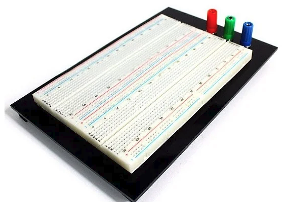
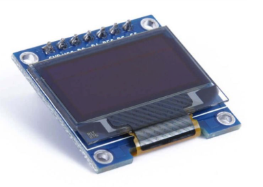

Controle de Lâmpada inteligente com ESP32/JavaScript
▼
Arraste para descobrir mais
O nosso projeto basicamente funciona de maneira bem simples e simplificada, com seu celular e um aplicativo/site é possível acender/apagar uma lâmpada sem precisa de interruptor e um eletricista.
Com o ESP32 e sua funcionalidade blueetooth é possível acender e apagar a lâmpada a uma distância de até 100 metros! Com um display OLED é possível ver também através do sensor de temperatura na tela os valores da temperatura ambiente e uma interface automatizada!
O nosso projeto visa resolver um problema que muitas pessoas tem atualmente, quando vamos tentar encontrar um eletricista para fazer uma instalação de uma lâmpada na sua casa sai caro dependendo do tipo de interruptor/lâmpada não é?
Bem com apenas R$ 100-150 como componentes básicos é possível automatizar esse processo de acender a sua lâmpada sem precisar se levantar do seu sofá quentinho e a distância e observar também a temperatura ambiente do seu comôdo que você instalou a lâmpada!
O nosso projeto funciona da seguinte maneira: O ESP32 a plaquinha preta pequena é o cérebro do nosso projeto, ele é quem disponibiliza os pinos de comunicação do circuito, ele também fornece o bluetooth que usamos para conectar no app/site para que a lâmpada seja acessa. O sensor de temperatura como o nome já diz vê a temperatura, retórico não? Bem... Ele se comunica diretamente com o ESP32 mandando seus valores para ele para que através da programação no ESP32 ele se comunique com o display OLED e mostre os valores da temperatura na tela, o módulo relé fica responsável por alimentar a lâmpada e acende-lá enquanto usamos programação para acender/desligar a lâmpada através de um botão ou comando que o usuário digita na tela.




Sua opinião sobre o projeto é muito importante pra gente. Leva menos de 2 minutos!